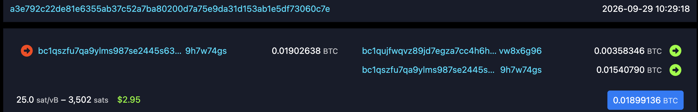

Do not bring any written materials or electronic aids (no calculators, cheat sheets, headphones, laptops, notes, phones, or textbooks)
Learning outcomes
By the end of today’s lecture, you will learn:
How cryptocurrencies allow people to broadcast and record financial payments on a “public ledger,” also known as a blockchain
The role that hash functions and digital signatures play in the design of Bitcoin
Review from previous lectures
A cryptographic hash function\(H: \{0, 1\}^* \to \{0, 1\}^n\) is an efficiently-computable function that accepts unbounded input and that provides output strings of a fixed number of bits \(n\). It satisfies the following requirements:
Preimage resistance: given a uniformly random string \(y \in \{0, 1\}^n\), it is practically infeasible for Mallory to find any preimage \(x\) such that \(H(x) = y\).
Collision resistance: it is practically infeasible for Mallory to find two different inputs \(x_1\) and \(x_2\) such that \(H(x_1) = H(x_2)\)
Random oracle: \(H\) acts as if its truth table has random and independent rows
A digital signature provides three efficiently computable operations (KeyGen, Sign, and Verify) that satisfy the following requirements:
Correctness: Alice’s honest signatures always pass the verification check
Unforgeability: even after Mallory receives signatures on messages of her choice, it is computationally infeasible for her to forge a signature on a new message
These two cryptographic tools are all we need to build a cryptocurrency – a system for digital money.
8.1 Internet-based money
Warning: The cryptocurrency market is incredibly volatile. Investing in cryptocurrencies is a bad way to make money, and a good way to lose money. Do not invest in cryptocurrencies!
With that warning stated: we will explore the world of cryptocurrencies in Unit 2, for two reasons.
It will deepen our understanding of hash functions and digital signatures, which cryptocurrencies use in clever ways
We will learn how cryptocurrencies solve the problems of broadcast and leader election, and we can apply these techniques to other scenarios that require reaching consensus over the Internet
Cryptocurrencies are an alternative banking system that:
Allows people to transfer money to each other electronically over the Internet without the need for a single trusted banking authority
Is “secure” against “powerful adversaries” (we will make this claim more precise today and in future lectures)
Recall that when Bob receives a check from Alice in the physical world, he may be suspicious that Alice is trying to deceive him. He needs to be able to verify the following three properties.
Alice properly signed the check
Alice possesses $1 in her bank account
Alice does not double spend the money by writing a check to someone else at the same time
For a digital monetary system:
A digital signature scheme like Schnorr, ECDSA, or RSA can satisfy objective #1, because signatures are unforgeable.
To satisfy the other two objectives, it would be great to have a digital version of a ledger that is available to everyone.
A ledger is a book or collection of accounts in which account transactions are recorded. Each account has an opening or carry-forward balance [and] a list of transactions, each recorded as either a debit or credit.
For every debit recorded in a ledger, there must be a corresponding credit, so that the debits equal the credits in the grand totals.
Imagine for the moment that there was a book that is:
Public, meaning that anyone can read it at any time
Append-only, meaning that:
Anyone can add new information at the end of the ledger, but
Nothing that is already in the ledger can ever be erased or overwritten
If you had such a ledger, then you can emulate the bank!
8.2 Bitcoin’s public ledger
Bitcoin is a public and peer-to-peer cryptocurrency. It is a digital coin, combined with a digital ledger called a blockchain that keeps track of how many Bitcoins each party holds at any moment in time.
Rather than relying on a bank, the ledger is maintained by everyone running the Bitcoin software
Participants called nodes maintain consensus over this ledger
The ledger is separated into blocks, and each block can contain many transactions
These blocks are created by miners, and a new block is mined approximately every 10 minutes
Here are some recent blocks on the Bitcoin blockchain.
Blocks in the Bitcoin blockchain (source: mempool.space)
History
The data structure for Bitcoin’s public ledger is called a blockchain.
It is a sequence of blocks, which themselves contain several transactions
If everyone acts honestly, the intention is that new blocks are only added to the end of the chain
Bitcoin was invented in 2008 by an anonymous party (or parties) holding the pseudonym Satoshi Nakamato.
While we will focus today on financial transactions, in principle you can store any data on Bitcoin.
The first transaction on the Bitcoin blockchain encodes the following message: “The Times 03/Jan/2009 Chancellor on brink of second bailout for banks.” It is a reference to an article posted in a British newspaper on January 3, 2009.
Because the Bitcoin blockchain is public, anyone can read any message that has ever been stored on it. The following code connects to a Bitcoin node (hosted on mempool.space) and extracts the bytestring message written within the genesis (first) block in the miner’s coinbase transaction.
import requestsfrom binascii import unhexlify# getting the block id for the genesis block (block 0)genesis_block_id = requests.get('https://mempool.space/api/block-height/0').text# getting all the block transactions of block 0 and parsing itresponse = requests.get('https://mempool.space/api/block/'+genesis_block_id+'/txs')# print the message in the coinbase transaction of the genesis blockprint(unhexlify(response.json()[0]['vin'][0]['scriptsig_asm'].split(" ")[5]))
b'The Times 03/Jan/2009 Chancellor on brink of second bailout for banks'
But you don’t have to trust the mempool.space website. Anyone can run the Bitcoin software and join the peer-to-peer network to see these blocks and transactions as they appear.
Interactive question. Which data structure corresponds to a single financial payment of Bitcoins?
Block
Blockchain
Transaction
8.3 Bitcoin transactions
A Bitcoin transaction is a single money transfer, somewhat like a written check from a sender to a receiver. But unlike a check:
There can be more than one sender or receiver
We write the sender and receiver’s public keys, rather than their real-world identities
Transactions are irrevocable: if you make a mistake and send your money to the wrong place, it is gone forever!
If you have a public ledger, then there are two ways to record financial transactions.
Record the current owner of each coin. This is called the account model and it is what the traditional banking system does. The bank maintains a list of every account and its account balance. When a transaction is submitted, the bank updates its account ledger by debiting the sender and crediting the receiver.
Record the movement of each coin. This is called the unspent transaction output model, or UTXO. Bitcoin follows this approach by recording every financial transaction ever made.
In fact, you don’t even need to do both! Account balances can be inferred from the transaction list.

Bitcoin transaction
Interactive question. Suppose that Alice and Bob each start with $2, and Carol and David each start with $0. Then, the following transactions occur:
Alice pays $1 to Bob
Alice pays $1 to Carol
Bob pays $1 to Carol
Carol pays $1 to David
Bob pays $1 to Alice
David pays $1 to Bob
Alice pays $1 to David
Who has the most money now?
Alice
Bob
Carol
David
Transaction validity
In the UTXO model, for a transaction to be valid, the sender(s) must:
Digitally sign the transaction
Point to the prior transactions where they received the coins that are now being sent
Not send out more money than they have
If \(\textit{in} > \textit{out}\), then a miner can claim the “leftover” money \(\textit{in}-\textit{out}\) as a transaction fee.
Transactions in Bitcoin are slightly different than checks in the physical world.
Checks say “Alice hereby agrees to send 1 coin to Bob, signed Alice”
Bitcoin transactions say “the person who holds the secret key corresponding to \(\textit{pk}_{\textit{Alice}}\) hereby agrees to send 1 coin to the person who holds the secret key corresponding to public key \(\textit{pk}_\textit{Bob}\), digitally signed with \(\textit{sk}_{\textit{Alice}}\)”
For this reason, we say that Bitcoin is pseudonymous.
Real-world names are never directly posted on the public blockchain.
However, as we will see in a future lecture, Bitcoin is not anonymous because both people and money can be tracked over time.
Anyone who receives money in Bitcoin can send it out in a later transaction.
Note: transactions in Bitcoin can be more complicated than a simple transfer of money. They can involve more sophisticated computer scripts that allow for conditional transfers.
Broadcasting transactions
Recall that we previously studied the power of common knowledge.
Mutual knowledge is information that everyone knows (like what happens at the start of the muddy children puzzle)
Common knowledge is information that everyone knows, and everyone knows that everyone else knows, and everyone knows that everyone knows that everyone knows, and so on (like what happens at the end of the muddy children puzzle)
Suppose that Alice sends her signed transaction to every other computer over the Internet. Then:
Everyone has the mutual knowledge that Alice wants to pay 1 coin to Bob
But they do not yet have the common knowledge that everyone else knows, and everyone knows that everyone else knows, and so on
What happens if Alice only owns 1 coin, and she also broadcasts a transaction to pay 1 coin to Carol?
We need a way to agree on the order of transactions and resolve conflicts
But different people on the Internet can receive messages in different order
8.4 Bitcoin blocks
Bitcoin transactions are grouped into blocks.
A block is limited in size to around 2 megabytes, which is enough space to store a few thousand transactions
A new block is created approximately every 10 minutes
For instance, here is a block that was mined yesterday.
The blocks are linked together into a blockchain. Every block references the hash of the previous block. This data structure contains the entire Bitcoin ledger.
The blockchain is around 772 GB in size (so anyone can download the ledger, but it might take awhile)
Consensus over blocks
The most important property of the Bitcoin blockchain is that all participants eventually reach consensus so that everyone agrees on the contents of the ledger. If I believe that Alice owns 3 coins, then (eventually) so should you.
Note that in this course, the term “agreement” means that everyone agrees on what was said. It does not mean that they like what was said.
Tamper with the ledger – that is, Bitcoin protects data integrity
Break or censor the ledger – that is, Bitcoin protects data availability
But Bitcoin does not protect data confidentiality.
Specifically, we want a blockchain to achieve two types of consensus properties.
Liveness: Every valid transaction eventually makes it into some block
Safety: The contents of each block are eventually agreed upon by all honest participants in the Bitcoin network
Note the use of the word “eventually” in each claim. In future lectures, we will discuss how long “eventually” might take.
8.5 Participants in Bitcoin
At a high level, there are three types of participants within Bitcoin.
A light client only needs to hold one or more secret keys for a digital signature scheme. (And optionally also a small amount of additional data, which we will discuss next week.)
We consider the corresponding public key also to be their bank account number. These accounts might have money, if (1) someone else has sent money to this account within some transaction in the past and (2) no subsequent transaction has spent the money.
A node additionally stores the entire state of the blockchain. (Note: this can be large! The Bitcoin blockchain is currently about 772 gigabytes in size.)
A miner additionally tries to write new blocks on the blockchain. As we will see, the miner’s task requires substantial computing power.
Anyone can create a Bitcoin account and become a light client. All that is needed is a secret key and public key for a digital signature scheme like ECDSA or Schnorr signatures.
In the snippet of code below, we are creating an actual Bitcoin address right now! (But it has no money, since nobody has signed over their coins to us.)
This code is just for demonstration purposes. Do NOT execute this code to create a real Bitcoin key! This code makes no attempt to protect the secret key from being lost or stolen.
# !pip install "cryptos@git+https://github.com/nicolas3355/cryptos"# library by Andrej Karpathy, with edits by Nicolas Alhaddadfrom cryptos.keys import gen_secret_key, PublicKeyfrom cryptos.bitcoin import BITCOIN# generate a secret/public key pairsecret_key = gen_secret_key(BITCOIN.gen.n)public_key = PublicKey.from_sk(secret_key)print('generated secret key, in hex format:')print(hex(secret_key))print('\ncorresponding public key, as an elliptic curve point:')print(public_key)# get the associated bitcoin addressaddr = public_key.address(net='main', compressed=True)print('\ncompressed bitcoin address, in base 58 check format:')print(addr)
generated secret key, in hex format:
0x11146ce408f3bcf833e17ac213ebe578c0b2f58b15fd43721f02707a94cc6a36
corresponding public key, as an elliptic curve point:
PublicKey(curve=Curve(p=115792089237316195423570985008687907853269984665640564039457584007908834671663, a=0, b=7), x=97372424065323306128977267639433794485342648939529541765330977643219421633607, y=49465412336846526941627945542677025329540272931864111746217136332800617748617)
compressed bitcoin address, in base 58 check format:
1DH3UXXNWhusUhgntk8LQNxefAUQ1Ky83n
Whereas creating an account is easy, keeping track of this account is more difficult. If you accidentally delete your secret key, then you will never be able to spend the money in the account – effectively, your money is gone forever.
We will discuss in a future lecture how we can make it easier for people to keep track of their secret key(s) in a secure way.
Role of a miner
Bitcoin needs miners: without them, no money transactions can ever be recorded. So the Bitcoin system incentivizes people to become miners. If you create or mine a new block, then you get two kinds of rewards:
You get to create new coins out of thin air. Specifically, you get 3.125 Bitcoins, which is worth about $260k at current exchange rates. (This is the only way that new Bitcoins get introduced into circulation.) In Bitcoin terminology, this is called a coinbase transaction.
You receive the transaction fees that people set aside for you within their transactions. The average Bitcoin transaction fee is currently around 39¢ per transaction.
If all miners act honestly, then the ecosystem works well: people can conduct money transfers over the Internet, and the miners receive a reward for their efforts.
Being a miner seems like a great job! In fact, it might be too good.
Question. Suppose that you have a job opening and there are millions of applicants. You can’t hire everyone, and in fact you cannot even interview everyone. What would you do?
Leader election
Bitcoin uses a randomized election system (aka, a lottery) to choose the next miner. It doesn’t matter (much) who wins the election; the important part is that the nodes reach consensus on who has won.
Also, Bitcoin uses computers (rather than people) to determine the lottery winner.
Its proof of work system gives mining rights to the first person who finds a string nonce such that the hash digest \(\texttt{SHA-256}(\texttt{block}, \texttt{nonce})\) is a very small number
The miner puts the winning lottery ticket nonce in their new block as proof that they won the lottery
As a result: mining a block is hard! This is done on purpose so that it is unlikely that two miners win the lottery at the same time.
One way to think about the proof of work puzzle is that the miners need to compute SHA-256 hashes on random inputs until the corresponding output starts with \(\ell\) zero bits in a row. The time to success scales exponentially in \(\ell\).
# average number of SHA-256 computations until the first 4 bits == 0from hashlib import sha256import osarr = []nb_of_trials =5000for _ inrange(nb_of_trials): count =0hash="1"while(hash[0] !='0'): # check if SHA-256 hash begins with hex 0 count +=1hash= sha256(os.urandom(32)).hexdigest() arr.append(count)print(sum(arr)/nb_of_trials) # average number of hashes needed, actual answer: 16
16.2266
# let's increase to 16 zeroes and see what happensfrom hashlib import sha256import osarr = []nb_of_trials =5000for _ inrange(nb_of_trials): count =0hash="1"while(hash[0:4] !='0'*4): # now check if hash begins with hex 0000 count +=1hash= sha256(os.urandom(32)).hexdigest() arr.append(count)print(sum(arr)/nb_of_trials) # actual answer: 65,536
65506.6602
8.6 Bitcoin ensures consensus, not speed
The main goal of Bitcoin is that everyone agrees on the contents of the blockchain ledger. This goal is so important that it comes at the expense of speed: transactions can take hours to settle on the blockchain.
More precisely, cryptocurrencies like Bitcoin have been carefully designed so that 3 types of attacks are practically infeasible.
Censorship: Miner Mallory refuses to post certain transactions
Inconsistency: Miner Mallory sends blocks to different nodes containing conflicting transactions
Double spending: Miner Mallory goes back in time to overwrite an earlier block
Within Bitcoin, “practically infeasible” does not always mean “energy of the sun” levels of difficult. Instead, Bitcoin ensures that the attacks are onerous enough to perform that:
It’s very computationally expensive to try – essentially, Mallory needs to control a majority of the world’s mining power (more than all honest miners combined)
Any rational miner is incentivized to use that computing power instead to make money as a legitimate miner
We will discuss in future lectures:
The details of Bitcoin’s proof of work mining process
How Bitcoin avoids censorship, inconsistency, and double spending attacks